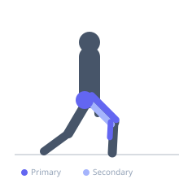
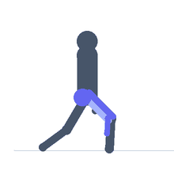

Exercise guide / StairMaster / StepMill Climb
StairMaster / StepMill Climb
The StairMaster or StepMill is a continuously rotating staircase machine that simulates stair climbing, maintaining a constant stepping demand that challenges the quadriceps, gluteus maximus, and calves under a sustained aerobic load. Unlike stair steppers that use a simple up-down piston motion, the StepMill requires the user to clear full steps, producing a greater range of hip and knee flexion and significantly higher glute activation. It provides excellent low-impact cardiovascular conditioning and is widely used for lower body muscular endurance and calorie expenditure.
Primary muscles
vastus lateralis
vastus medialis
gluteus maximus
gastrocnemius medial
Secondary muscles
biceps femoris long head
gluteus medius
soleus
Stabilizers
erector spinae
transverse abdominis
Equipment


Starting position
- Step onto the machine and hold the rails lightly for balance only. Set the speed to a manageable starting pace (level 6–10). Stand upright with a tall posture.
Setup
- Set speed before stepping on. Use the rails only for balance — not to support body weight. Many users hang off the rails, which dramatically reduces the training effect.
Steps
- Step 1: Begin at a comfortable speed. Step onto each rotating step fully, pressing through the whole foot.
- Step 2: Maintain an upright torso. Avoid leaning forward heavily onto the console.
- Step 3: Push down and through each step from the glutes and quads. Clear each step completely before it rotates under your foot.
- Step 4: Keep the core braced and hips level — avoid excessive lateral sway.
- Step 5: Continue for the target duration, adjusting speed as needed.
Coaching cues
- Let go of the rails
- Step through the full step — do not shuffle
- Drive from the glute, not just the quad
Breathing
- Breathe rhythmically. Aim for a sustainable aerobic pace where breathing is elevated but controlled — a conversational pace is appropriate for steady-state sessions.
Range of motion
- Each step should bring the knee to roughly 90° of flexion. Full step clearance is essential — do not shuffle.
Tempo
- Steady-state: 20–40 minutes at a moderate level (8–12). Interval option: 2 minutes at high speed / 1 minute at low speed × 10 rounds.
Common mistakes
- Leaning heavily on the handrails, which shifts load away from the legs and spine
- Taking very short half-steps that reduce the hip and knee range of motion
- Setting speed too high too quickly before the body has adapted to the movement pattern
Safety
- Step fully onto each stair — a partial step increases the risk of slipping
- Reduce speed before stepping off the machine
Training
- endurance: 1–1 reps
- endurance: 1–1 sets
- Rest: {'endurance': 0}